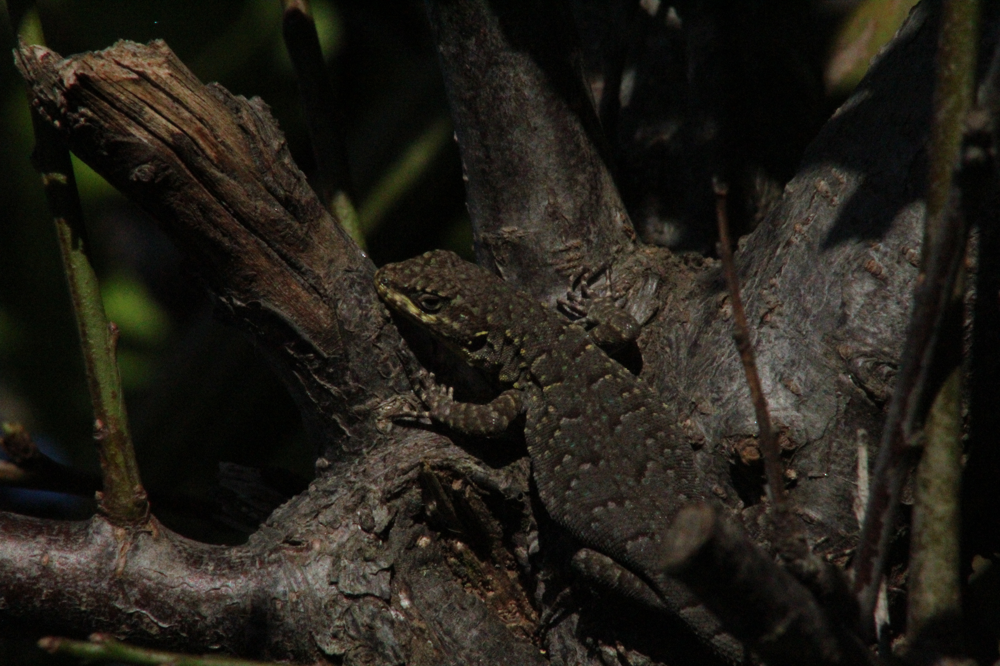
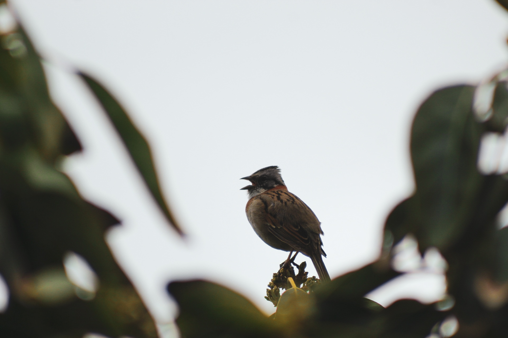
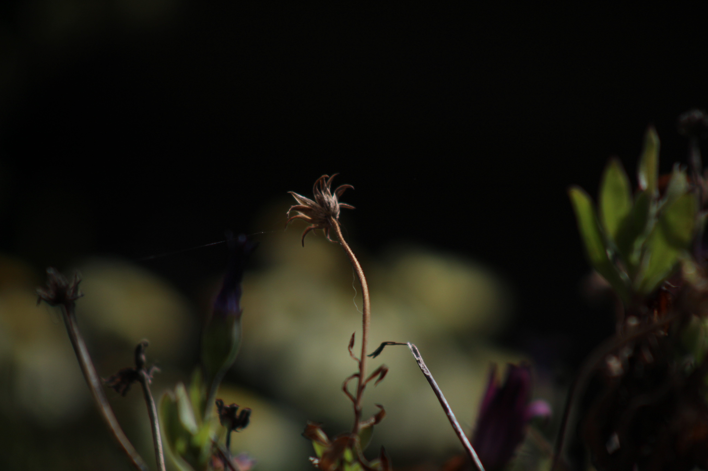

Proyecto 1: Perfectly camouflaged
Entre las texturas y tonalidades de la madera, una pequeña lagartija logra pasar casi desapercibida. Su cuerpo se funde con el entorno, demostrando cómo la naturaleza encuentra formas sorprendentes de esconderse a plena vista
Ver Código
Proyecto 2: A life up high
Una mirada a la vida desde las alturas, donde las ramas se convierten en refugio y el cielo, en un espacio para habitar. Una fotografía que captura la calma y libertad de un ave en lo alto de un árlbol.
Ver Código
Proyecto 3: Little flower
Incluso despues de florecer, algunas flores encuentran una nueva forma de belleza. En ellas permanece la huella del tiempo, recordandonos que marchitarse tambien es parte de la vida.
Ver Código